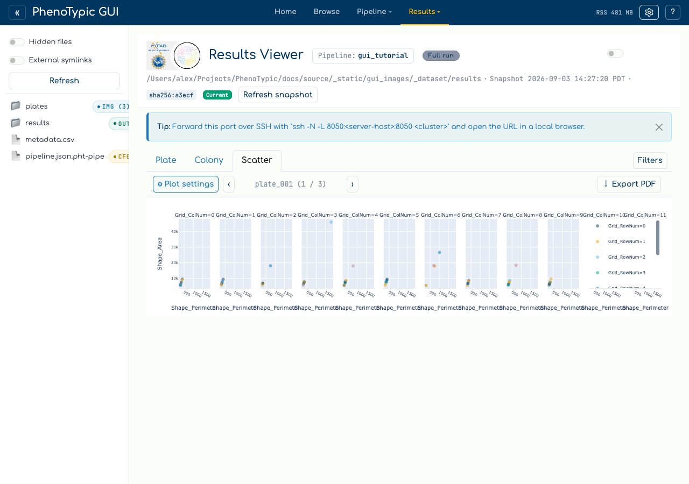
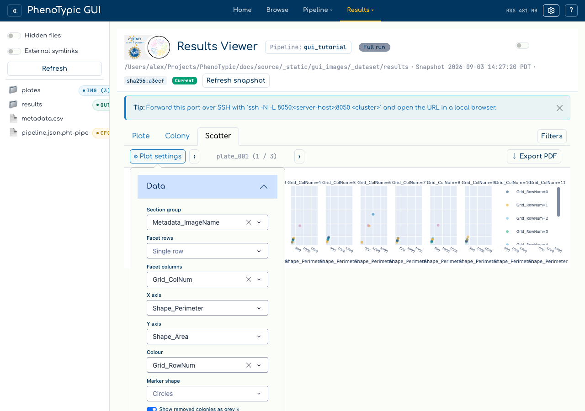
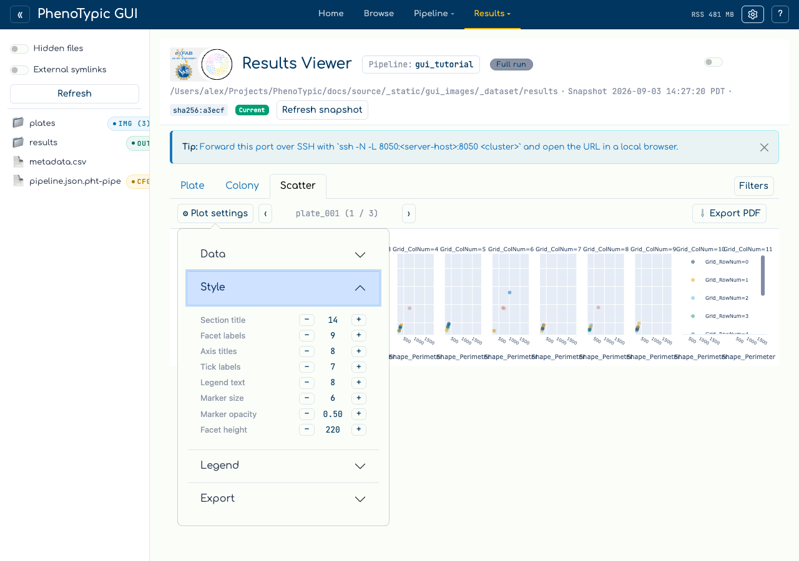
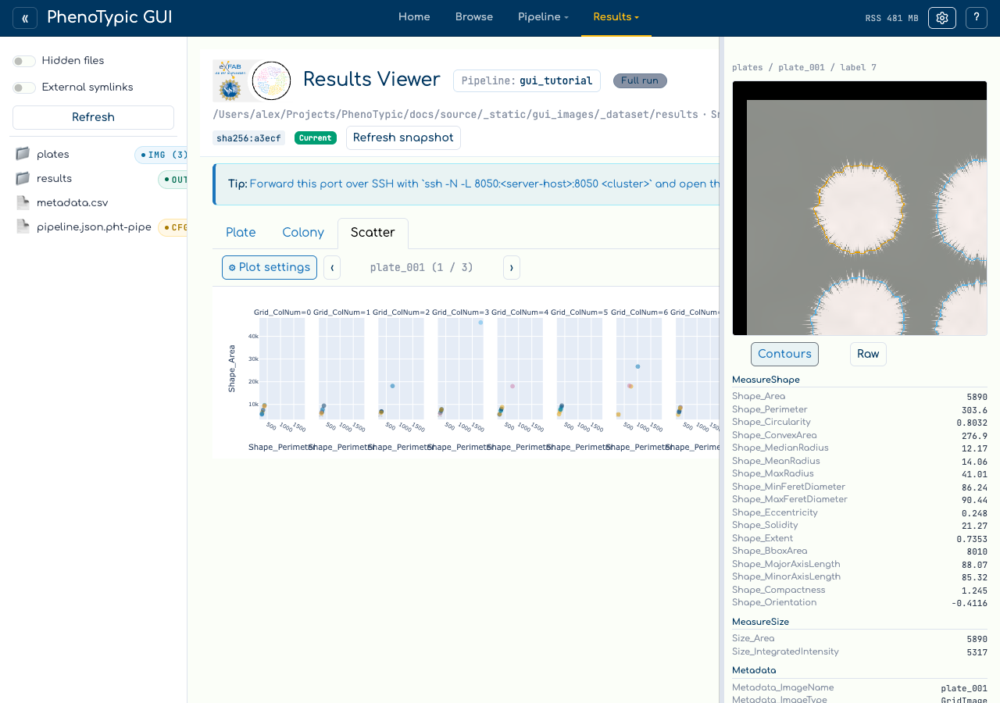

Scatter plots#
The results viewer’s third tab turns the measurements a run produced into a
faceted, clickable scatter plot, and exports the same figure as a multi-page
PDF. It reads the same frame the Plate and Colony tabs do — the post-applied
deliverables/measurements.parquet mirror — and shares the viewer’s filter
sidebar, its curation state, and its one Refresh.
Nothing about the plot is hard-coded. Every role a plotting script would fix in source — what makes a page, what makes a facet row, what goes on each axis, what colours and what shapes a point — is a dropdown here.
Open the tab#
Bind a CLI output in the viewer (see View Results), then pick Scatter from the tab row.

The toolbar holds three things: ⚙ Plot settings, the section pager, and ⇩ Export PDF.
Bind the plotting roles#
⚙ Plot settings opens a popover with one dropdown per role:
Role |
What it does |
|---|---|
Section group |
One value per page. The pager steps between them, and the PDF writes one page each. |
Facet rows / Facet columns |
Values become the rows and columns of a grid within the page. |
X axis |
Any numeric column, plus a derived frame index (capture order) — see below. |
Y axis |
Any numeric column. |
Colour |
A column mapped onto marker colour. |
Marker shape |
A column mapped onto marker symbol. |
Legend corner / Collapse the legend |
Where the floating legend sits, and whether it is shown at all. |
Show removed colonies as grey × |
Whether curation-removed colonies stay visible. |

Two things about these lists are worth knowing:
They describe the run, not the current filter. A column narrowed to one value by the filter sidebar is still offered, because a single-valued section, facet, colour or shape is an ordinary, correct figure. The Colony tab’s axis dropdowns behave differently on purpose — there, a single-valued column makes a degenerate grid.
Each role has its own ceiling. Sections are offered up to 60 distinct values, facet axes up to 12, colour up to 8 and shape up to 6 — the last two because the palette carries six colours and the symbol set five shapes.
The derived frame index#
Metadata_FrameIndex is often unpopulated, and Metadata_Timepoint is often a
constant, so X also offers frame index (capture order). It ranks the
distinct Metadata_ImageDatetime values within each plate, zero-based, so
every colony in one image shares a frame number. An image with no timestamp is
excluded from the plot rather than ranked zero, and the ranking happens after
filtering, so a filtered-out image leaves no gap in the order.
Size the figure’s type and markers#
The popover groups its controls into Data, Style, Legend and Export. Only Data is open when the popover mounts, so the role dropdowns stay the first thing you see; expand Style for the sizing steppers.

Each stepper moves one thing:
Control |
What it sizes |
|---|---|
Section title |
The heading on each exported PDF page |
Facet labels |
The |
Axis titles |
The X and Y axis names |
Tick labels |
The numbers along both axes |
Legend text |
The series names in the legend |
Marker size |
Point diameter |
Marker opacity |
Point alpha — lower it when points overlap heavily |
Facet height |
The height of one facet row, in pixels |
Facet height is the one worth understanding. The figure is that many pixels per facet row, not in total, so a ten-row grid is ten facets tall and the page scrolls. Raising it makes every row taller rather than dividing a fixed height among more of them.
Tip
These sizes apply to the export as well as the screen — the same FigureSpec
feeds both — so set them before you export rather than after.
Page through the sections#
‹ and › step one section group at a time. The chip between them names the
section on screen and its position, and it also carries two notices when they
apply:
— showing first N of M facets, when the row × column selection exceeds the 24-panel cap. The cap bounds the product: a 12-value row axis crossed with a 12-value column axis is 144 panels, not 24.— N rows excluded, no value to plot, when rows were dropped for having no X or Y value.
Both are recomputed on every render. A live run adds images and facet values over time, so a notice held from an earlier render would describe a figure nobody is looking at.
Note
A null grouping value is dropped rather than becoming a (none) page. A
column with 23 distinct values, one of which is null, pages 22 sections.
Click a point to open its colony#
Clicking any point opens a right-docked inspector for the colony behind it.

It carries three things:
The colony’s identity —
dataset / image / label.A crop, served centred on that colony. The Contours / Raw control switches between the crop composited with the objmap’s object boundaries (the focal colony outlined differently from its neighbours) and the raw pixels. Contours is the default here: the inspector’s job is to show what the detector found on this colony, not only its pixels.
Its measurements, grouped under the
MeasureFeaturesoperation that emitted each column. The grouping is read from the run’s own recorded pipeline parameters, so a measurer configured with non-default parameters is credited with the columns it actually claimed. Anything unattributable lands underUnattributed.
Drag the inspector’s left edge to widen it.
Switching Contours to Raw re-requests the crop; it does not re-resolve the click. That matters because a click can go stale:
Warning
If the run changes underneath you — a curation mark on the Colony tab, a Refresh picking up a live run’s new images — a point drawn before that change is refused rather than resolved. The inspector says “this point was drawn before the run changed. Refresh the snapshot and click again.” This is deliberate: resolving it anyway would open a real but wrong colony, with a real crop, and nothing would look amiss.
Points the plot cannot resolve are refused the same way. Metadata-only phantom rows — the placeholder rows a run writes for a strain it detected nothing for — are never plotted at all, so the plotted count is a colony count rather than a row count.
Curation and filters#
Scatter reads curation and never writes it; mark and restore stay on the Colony tab. With Show removed colonies as grey × on (the default), curation-removed colonies stay on the figure as a grey × series so a plot says what has been taken out of it. Turn it off and they disappear, and the shared axis ranges narrow to what is left.
The filter sidebar is the viewer’s, not the tab’s: editing a clause rebuilds this figure at the same time as it narrows Plate and Colony. So does the viewer’s single Refresh — there is deliberately no Scatter-local refresh button, because one would let this tab disagree with the others about which snapshot it is showing.
Export a PDF#
Page size lives in the popover’s Export section: 16×12 in (the default, matching the reference script), Letter landscape, A4 landscape, or Custom, which reveals width and height inputs seeded from whichever preset was showing.
⇩ Export PDF renders every section — one page each — and merges them into
a single scatter.pdf. It consumes exactly the frame on screen, so the document
cannot describe a different selection from the one you are looking at, and it
does not downsample.
Note
Export needs a Chrome or Chromium binary for kaleido to render through, and
that is not part of uv sync. When it is missing, the export says so beside
the button rather than silently doing nothing. Fetch one with kaleido’s
plotly_get_chrome, or point the BROWSER_PATH environment variable at a
browser you already have — the Chromium Playwright vendors for the e2e suite
works.
The on-screen figure draws WebGL traces so it can carry hundreds of thousands of points; the export substitutes ordinary SVG traces, because kaleido renders a WebGL trace as a valid, well-formed, entirely blank page.
Where to next#
View Results — the Plate and Colony surfaces this tab sits beside.
Analysis — fit models and emit analysis tables from the same measurements.
GUI hub guide — the full reference for every panel and store in the hub.